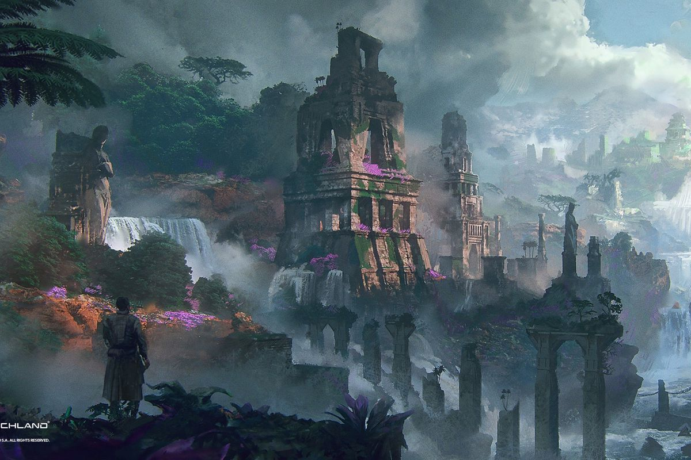
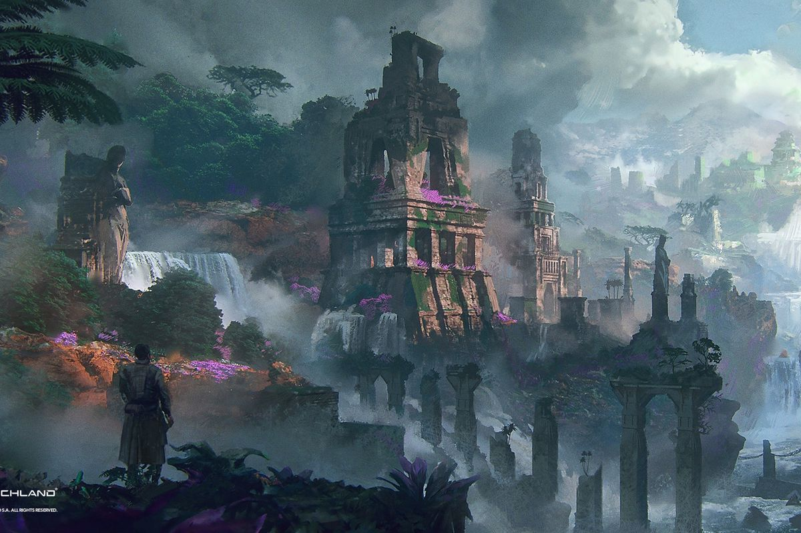

Gaming:
I'm a gamer with a preference for classics like Zelda. Enjoy both playing and analyzing video games to understand the world of game design.
Game Development:
 


I love to spend time developing games, especially RPGs, on the ROBLOX platform. Always working on enhancing the user experience and storytelling through my games.
Animation and Rigging:

With over 2 years of experience, I enjoy creating and rigging animations in both ROBLOX and Blender. This hobby helps me add depth and realism to my gaming projects and expand my skills in game design.